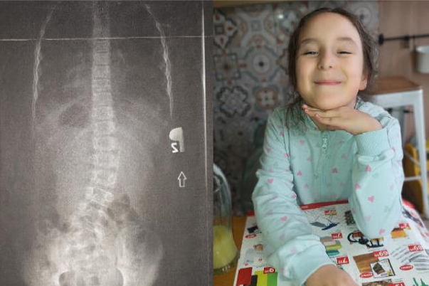

Wiek: 10 lat
Diagnozy: Skolioza lędźwiowa 43 stopni, asymetria i duża niestabilność ciała, wiotkość wielostawowa, padaczka, choroba neurologiczna (w trakcie dalszej diagnostyki)
Cel zbiórki: 75 000 zł
Sara od wielu lat zmaga się z poważnymi problemami zdrowotnymi. Podługich latach poszukiwań lekarze odkryli, że urodziła się bez dwóch kręgów kręgosłupa. Wada ta doprowadziła do rozwoju skoliozy, która obecnie powoduje bardzo silne dolegliwości bólowe. Dziewczynka musi nosić ortopedyczny gorset przez całą dobę oraz regularnie uczestniczyć w intensywnej rehabilitacji, aby zapobiec dalszemu pogłębianiu się deformacji i bólu.
Dodatkowo Sara cierpi na padaczkę, której napady występują coraz częściej i coraz gwałtowniej. Każdy z nich stanowi poważne zagrożenie dla jej układu nerwowego i wymaga stałej opieki neurologicznej. Mimo swojego wieku Sara potrzebuje pomocy w codziennych czynnościach – takich jak ubieranie się, kąpiel czy jedzenie.
Po śmierci taty cała opieka nad dziewczynką spoczywa na jej mamie. Samotna walka z chorobą dziecka i ogromnymi kosztami leczenia jest bardzo trudna. Turnusy rehabilitacyjne i specjalistyczna opieka dają Sarze szansę na zmniejszenie bólu, poprawę sprawności oraz godne, spokojniejsze życie.
Zgromadzenie środków na turnusy rehabilitacyjne, stałą rehabilitację, kontynuację leczenia neurologicznego, badania specjalistyczne oraz sprzęt ortopedyczny. Celem jest złagodzenie bólu, poprawa sprawności ruchowej i jakości życia Sary.